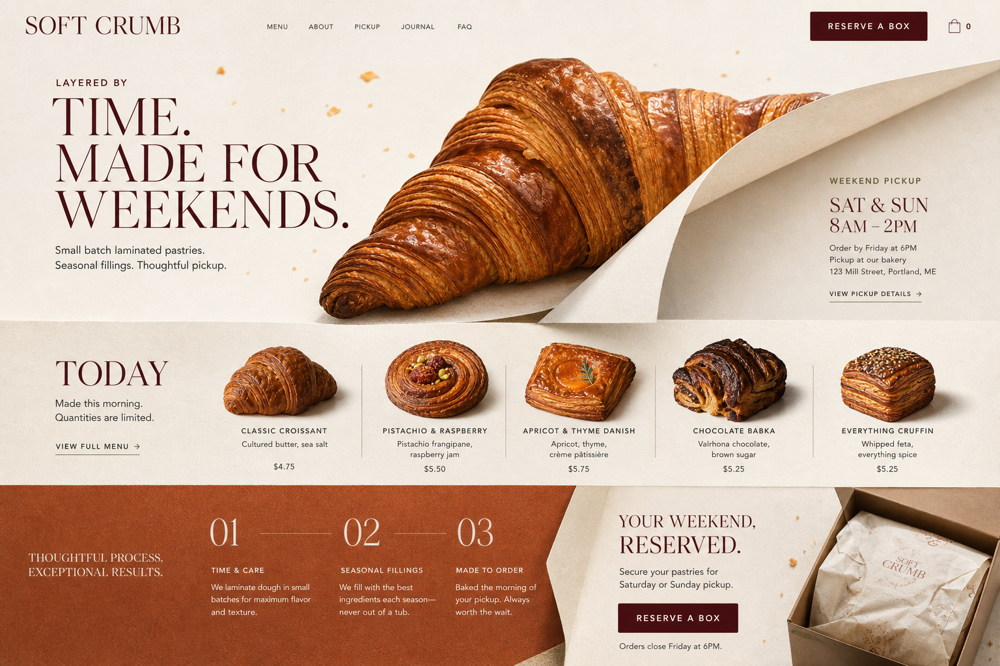
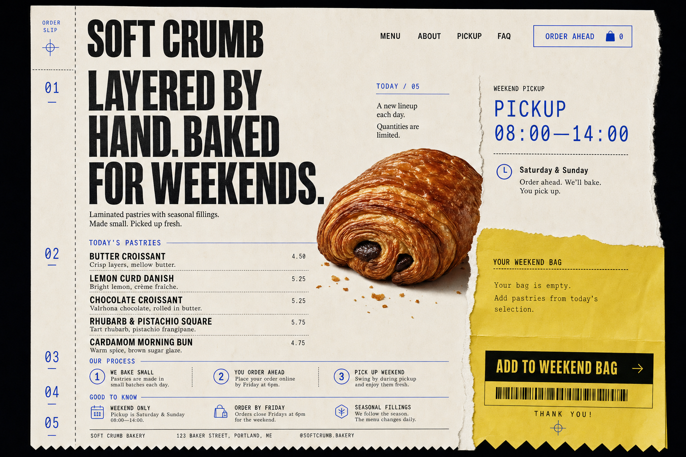
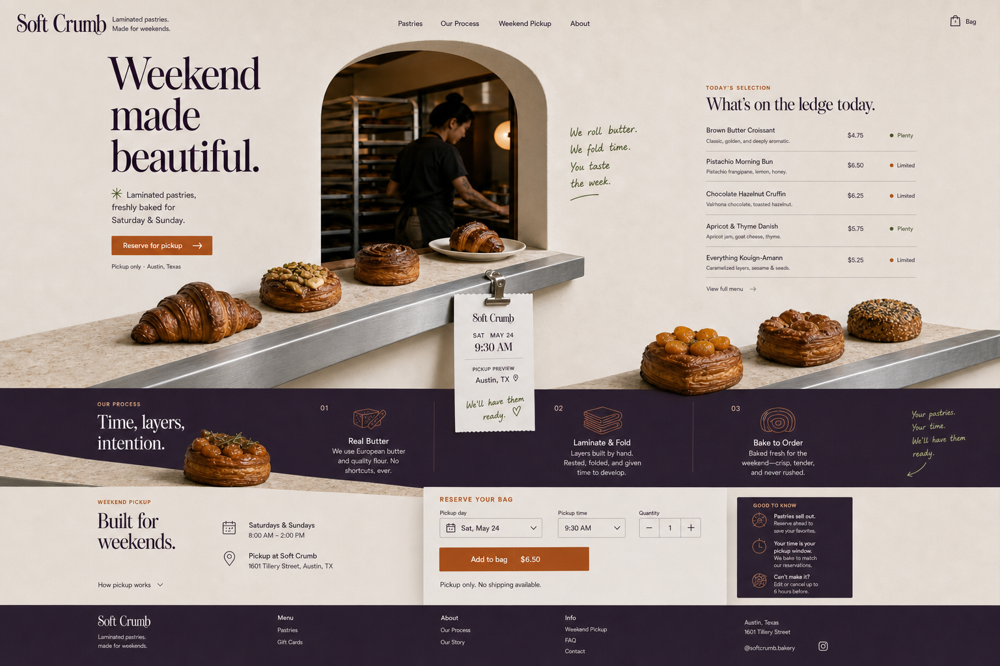

Three directions entered
One visual thesis survived best.
Direction A is the deterministic recommendation. The image is not the spec: its fold, hierarchy, and responsive transformation become inferred Design DNA; fake UI and impossible geometry are rejected.
Inspect the scored decision- Winner
- A
- Score
- 8.27
- Frames
- 6
- Model evidence
- gpt-image 2.0
Lamination becomes the page architecture.
The croissant and curling paper jointly form the page hinge. Product, pickup, process, and action appear to emerge from the same fold.
- Originality
- 8.1
- Product fit
- 9.6
- Hierarchy
- 9.3
- Responsive
- 9.3
- Risk ↓
- 3.2
Why it wins
It balances appetizing product focus, clear hierarchy, and the strongest mobile recomposition with the lowest misleading-control risk. Preserve the fold as structure—not a brittle pixel collage.

The bakery becomes one continuous order slip.
A numbered rail controls the reading order, a pastry interrupts the print field, and the bag becomes the torn yellow claim area.
- Originality
- 9.2
- Product fit
- 8.7
- Feasibility
- 8.8
- Responsive
- 8.8
- Risk ↓
- 6.7
Why it lost
The order-slip thesis is the most original and cheapest to implement, but the menu has no visible selection state while the empty bag exposes an add action. The harder industrial voice also fights the name “Soft Crumb.”

The weekend pickup window becomes the page.
A bakery aperture and continuous stone-and-steel ledge carry pastries, production evidence, selection, process, and pickup.
- Originality
- 9.2
- Product fit
- 9.4
- Hierarchy
- 9.2
- Difficulty ↓
- 8.3
- Risk ↓
- 6.1
Evidence repair
The first “desktop” was actually 864×1821 portrait and was rejected. The regenerated 1536×1024 frame fixed the aspect and desktop success-state conflict. Mobile still mixes “Add to bag” with “Reserved,” so that state is rejected from the contract.
View rejected frame{kind=link}

What happens next
The image inspires. The contract governs.
- 01
Approve Direction A—or deliberately override with another eligible direction.
- 02
Extract the fold, hierarchy, crop logic, and responsive mutation as inferred Design DNA.
- 03
Reject duplicate fake controls, tiny mobile process type, and any rasterized UI text.
- 04
Write feasible tokens, states, breakpoints, media routes, and type roles into
DESIGN.md. - 05
Build, compare, repair against the verified reference hashes and current contract digest.